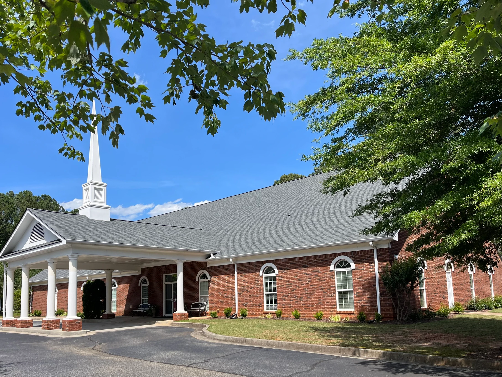
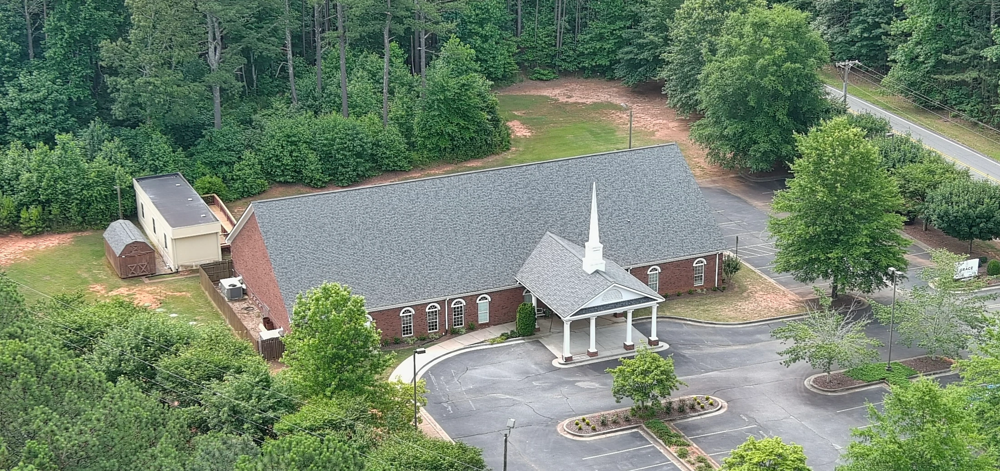

Grace Baptist Church · Dacula, GA
Whether you're new or looking for a church family, there's a place for you here.

Welcome to Grace
Clear, expositional preaching of the Word of God is the heartbeat of Grace Baptist Church — and so is the community that gathers around it.
Grace Dacula is a story of God's varied grace. Since our beginning in the year 2000, our story at Grace Baptist Church of Dacula is a reminder that God's grace is sufficient for all.
We are all different — Southerners, Northerners, immigrants, Native Georgians. We speak many languages and come from many walks of life. But we have one thing in common: a desire to know and love God, and to serve Him with all our heart.
Our Story →Teaching · Pastor Kimbrough
Clear, expositional preaching of God's Word — watch live or on demand.
Loading...
Loading...
Loading...
Generosity
Your generosity makes a difference. Every gift helps us share the Gospel, serve our community, and support the mission of the church.
"Each one must give as he has decided in his heart… for God loves a cheerful giver." — 2 Cor. 9:7
Give Online →